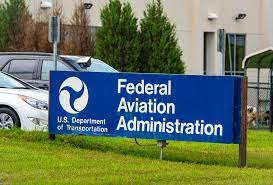

Syracuse, NY - On the early summer morning of August 3rd, 2023, at Chicago O’Hare International Airport, where there is nearly one takeoff or landing per minute, a Boeing 737 Max entered a runway without permission, creating a dangerous situation for the next plane ready to land. The same Boeing 737 Max crossed another runway just minutes later without permission. After just a little over a week at the same airport, a Boeing 777-300 did not clear the runway after landing, forcing the plane scheduled to land after it to make a forced go-around. Incidents like these have raised concerns among many and have questioned the role of airline safety.
With the airline industry roaring back to pre-pandemic numbers and passengers eager to return to the skies for travel, it has been said that there has been a shortage in ATC personnel since the pandemic, leading to an increase in close calls. However, the question is, has a shortage of ATC personnel post-pandemic contributed to this increase?
In a recent statement from the FAA sent to NCC News responding to the increase in incursions,

“One close call is one too many. The FAA and the aviation community are pursuing a goal of zero serious close calls, a commitment from the Safety Summit in March. The same approach virtually eliminated the risk of fatalities aboard U.S. commercial airlines. Since 2009, U.S. carriers have transported more than the world’s population with no fatal crashes.”
FAA Office in Minneapolis - Flickr
An NCC News investigation looked at the top 5 busiest airports in the U.S., including Hartsfield-Jackson Atlanta Int. , Dallas Fort Worth Int. , Denver Int. , Chicago O'Hare Int. , and Los Angeles Int. In addition, data was used from the FAA in their Aviation Safety Information Analysis and Sharing (ASIAS) database. NCC News found that in the years after COVID-19, from 2020 to 2023, there were 117 pilot error-related incursions to 83 ATC error-related incursions. According to the FAA, the number one cause of incursions today is pilot-related, with 60% of all incursions attributed to pilot error.
However, a recent N.Y. Times article blamed close calls on Air Traffic Control,
“The agency’s internal records show that the incidents often occur at or near airports and result from human error. Mistakes by air traffic controllers — stretched thin by a nationwide staffing shortage — have been one major factor. “
This has sparked much controversy throughout the aviation community. The FAA responded to the article, pushing back on the N.Y. Times editors,
“The FAA maintains extremely conservative standards for keeping aircraft safely separated.”
NCC News also found the NY Times to be false in their acquisitions.
When examining the number of incursions before COVID-19 from 2012 to 2019, the results still prove that pilot error and not air traffic control are the causes. There was a 24% increase in pilot-related incursions compared to a 13% decrease in ATC-related incursions between those years.
NCC News discovered that incursions' severity was greater among Air Traffic Control related incursions. The following image taken from the FAA website shows how they rank incursions.
FAA Incursion Severity Rankings - FAA
From 2012 to 2023, the more severe cases of incursions were down for pilot errors, with B rankings down by about 67%, C rankings were down by about 29%, and the less severe cases, D, was where Pilot error spiked in at about a 47% increase.
While the severity of cases from Pilot error may not outweigh the numbers attributed to errors by Air Traffic Control, the question of why pilots are the leading cause of putting passengers and other pilots in some danger is the question the FAA is trying to answer.
In an email exchange sent to NCC News from the FAA, the agency outlined that in September alone, they have made significant plans to improve the safety of flying, both on the ground and in the cockpit,
“More than $201 million in President Biden’s Bipartisan Infrastructure Law funding will go to airfield lighting systems at 82 airports. The projects will purchase and install new lighting for runways and taxiways to keep operations safe during reduced visibility and night conditions,” said the FAA. “Established a new advisory rulemaking committee to investigate the requirement of new technologies, such as cockpit-alerting systems, to improve runway safety.”
The following article, “Impact of human factors in aircraft accident mitigation and aircraft maintenance training needs in post COVID-19 aviation” by Karunakaran, C S and Ashok Babu, who both study aerospace engineering at the Hindustan Institute of Technology and Science, looks into the reason why pilot incursions are increasing.
Karunakaran and Ashok argue that after the COVID-19 pandemic, safety issues have risen as a result of low pay and long work days,
“Continuous pay cuts to employees and new payment policies with high workload increased risk factor and reduced the maintenance and safety performance.”
Karunakaran and Ashok both believe the only way to reduce aircraft incursion caused by human error is through increased training,
Airplane taking off at sunrise - Daniel Garrido/Getty Images
“Human factors training in the institutional level of aircraft maintenance training is the effective way for failure mitigation.”
According to the FAA, the aviation industry serves the transportation needs of nearly 3 million people a day; the increase of human error incidents on the ground and in the skies post-pandemic has left many of these travelers on edge and looking for answers.
Thank you for reading NCC News. Click the dropdown to see what sources were used for this artcile: